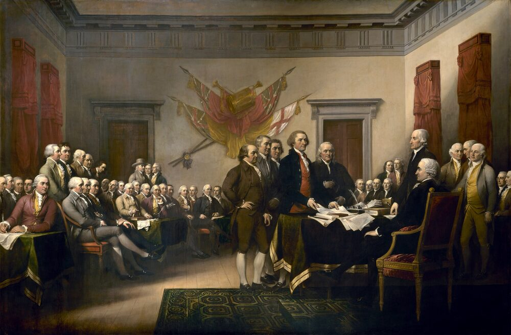
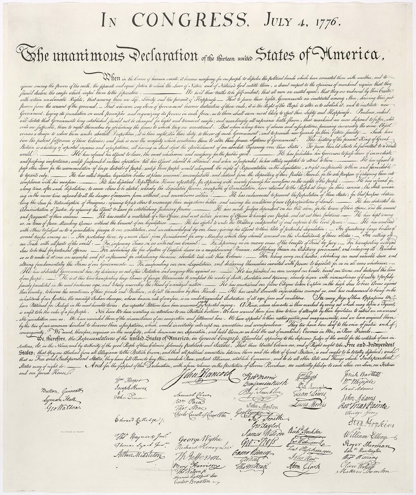

A2 · American History
The Declaration of Independence
Thirteen colonies, one hot summer in Philadelphia, and a letter to a king.
Reading
Play the audio and follow along, then read it again on your own. Tap or hover over a highlighted word to see what it means.
In the summer of 1776, a small group of men sat in a hot room in Philadelphia and decided to leave their country.
At that time, thirteen colonies on the Atlantic coast belonged to Britain. The king was George III, and he lived more than five thousand kilometers away.
The colonists were angry about taxes. Britain made them pay money for tea, paper and other things, but the colonists had nobody in the British parliament. They said: no taxation without representation.
The war with Britain started in 1775. For more than a year the colonies fought, but they still called themselves British.
Then, in June 1776, a group called the Continental Congress asked five men to write a document. The document had to explain to the world why America wanted to be a separate country.

One of the five men did most of the writing. His name was Thomas Jefferson, and he was thirty-three years old. He worked on it for about two weeks.
The most famous sentence is short: “all men are created equal”. Jefferson wrote that people have rights that no king can take away: life, liberty and the pursuit of happiness.
Congress discussed the text and changed parts of it. On 4 July 1776, they accepted it. Most of the men signed it one month later, in August.

There is a hard fact behind the beautiful words. Jefferson wrote that all men are equal, and Jefferson owned enslaved people. So did many of the other men in the room.
Americans celebrate the fourth of July every year with family dinners, music and fireworks. The war, however, continued for seven more years.
Key Vocabulary
- a colony an area controlled by another country (people there are colonists)
- a tax money that people must pay to a government
- parliament the group of people who make the laws in Britain
- representation having somebody who speaks for you in a government
- a document an important piece of writing
- to sign to write your name on a document
- rights the things everybody should be allowed to have or do
- liberty freedom
- equal the same as somebody else in value or importance
- to celebrate to do something special because of an important day
The Declaration of Independence — A2 · American History · Renan the Teacher, English Language Academy · https://renangrossi.github.io/englishclasses/reading/a2/declaration-of-independence.html
Interactive Exercises
Practice
Complete each exercise, then click Submit to see your score and an explanation for every answer.
Speaking & Writing
Discussion
There are no right answers here — use these to practice speaking, or write a short answer to each.
- Does your country have a national day? What happened on that date?
- The Declaration says people have a right to “life, liberty and the pursuit of happiness”. What rights do you think are most important?
- Jefferson wrote that all men are equal, and he owned enslaved people. How should a country remember a person like that?